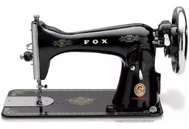
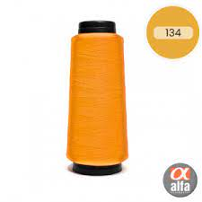

Conheça mais de nossa empresa, e um pouco de nossos produtos!
Nossas máquinas
MAQUINA DE COSTURA ZIG ZAG INDUSTRIALMaquina de Costura Casa Encantada RosaMáquina de Costura Doméstica Reta Prátika JX-2051Máquina de Costura Industrial Reta c/ Direct Drive e Corte de Linha MSG-8801D1Máquina De Costura Portátil 12 Pontos Bivolt Mini Máquina De Costura LMD-505A Lanmax BivoltMini Máquina de Costura a Mão Portátil FÁCIL TECMáquina de Costura Singer Tradition 2250 9 Pontos Agulha DuplaMáquina Manual de Costurar Boca de Saco SSH-9

Máquina de Costura Doméstica Pretinha - Retro - mod. AntigoMáquina Costura Industrial Galoneira Plana Direct Drive
Também vendemos linhas de costura, dê uma olhada em alguns de nossos produtos
Mr. Pen - Kit de linhas de costura, 24 peças, 90 jardas por carretel, 24 cores de fios de poliéster para costura, linha para costura, linhas de costura para costura, fio de poliésterKIT DE LINHA PARA COSTURA COM 10 UNIDADES DE CORES SORTIDAS 990MLINHA P/ COSTURA FIO 36 5000MKit 10 Linhas De Costura 120 Poliester Branca E Preta 1500mLinha de Costura 120 100% Poliéster 1300m Dinner 1500 Cor 710 TrichêLinha de costura 120 COR 573 c/ 1500 jardas tricheLinha de costura 120 COR 255 c/ 1500 jardas tricheLinha de Costura 120 100% Poliéster 1300m Dinner 1500 Cor 135 Trichê

Linha de Costura 120 2000j Cor 134 Resistente